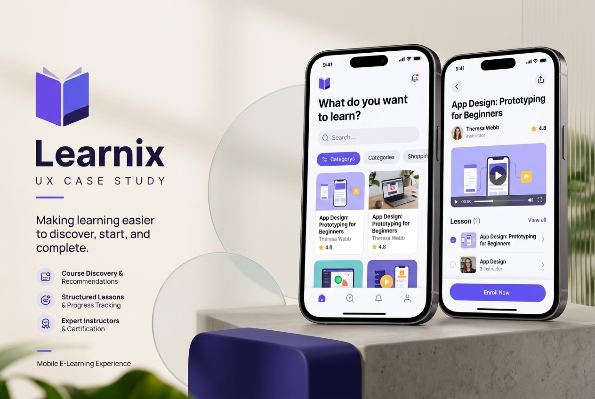
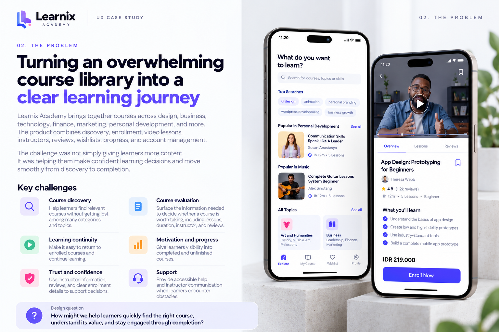
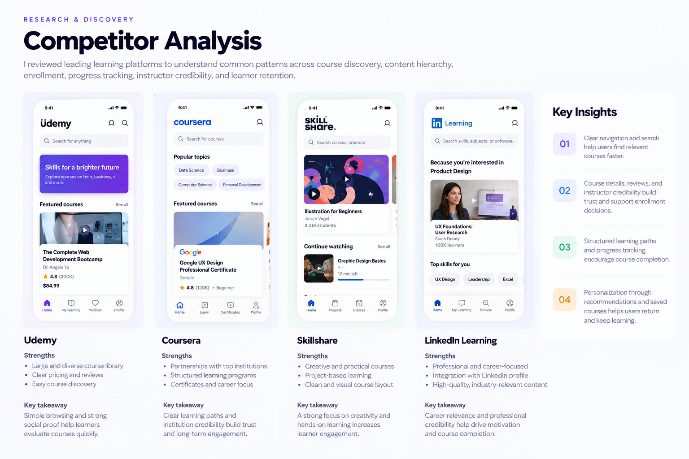
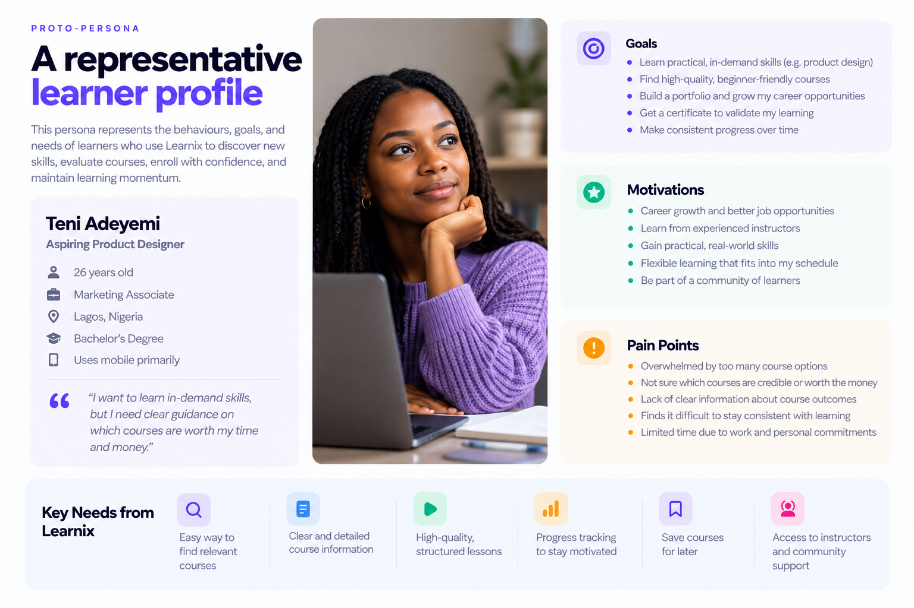
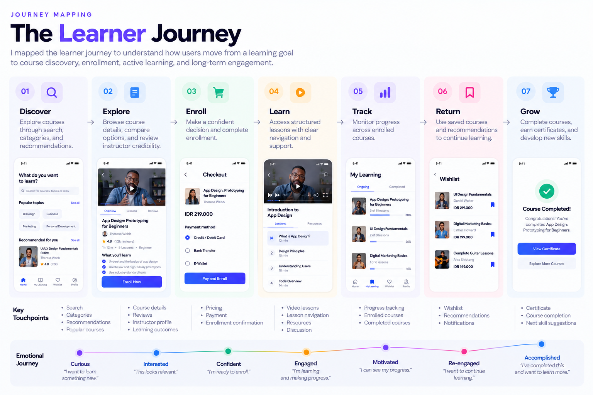
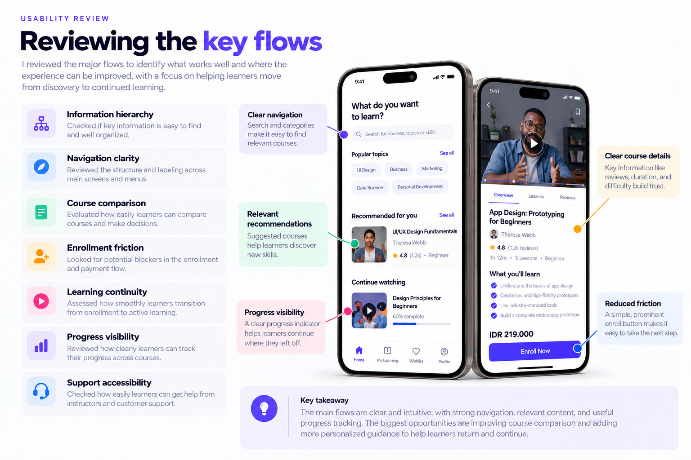
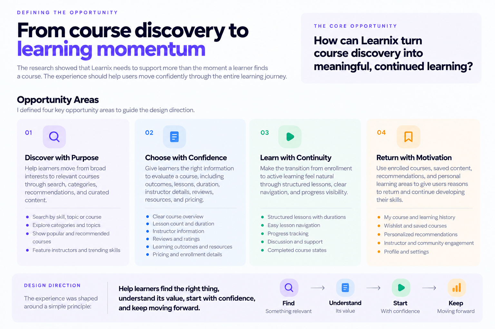

Making learning easier to discover, start, and complete

Learnix Academy is a mobile learning platform designed to help people discover relevant courses, learn from expert instructors, save courses for later, and manage their learning journey from one place.
The experience spans the full learning lifecycle, from discovering a skill and choosing a course to enrolling, completing lessons, tracking progress, and getting support. The product also includes course categories, search, recommendations, wishlists, instructor profiles, reviews, multilingual support, and learner account management.
The opportunity was to design an experience that could handle a large amount of educational content without making learners feel overwhelmed.
Learnix needed to help users quickly answer three important questions:
Turning an overwhelming course library into a clear learning journey
Learnix Academy brings together courses across design, business, technology, finance, marketing, personal development, and other disciplines. The product also combines discovery, enrollment, video lessons, instructors, reviews, wishlists, progress, and account management.
The challenge was therefore not simply giving learners more content. It was helping them make confident learning decisions and move smoothly from discovery to completion.
The opportunity was to transform Learnix from a collection of educational content into a more intentional learning journey, from curiosity to progress.

Understanding How Learners Discover, Evaluate, and Continue Learning
Learnix Academy is designed around more than course browsing. The experience connects course discovery, evaluation, enrollment, learning, progress tracking, saved courses, instructor discovery, and support within one mobile product.
I reviewed the existing product flows to understand where learners make decisions, what information supports those decisions, and where the experience could provide stronger guidance.
I mapped how learners move from a broad learning goal to a specific course. The experience supports:
This creates multiple entry points into the learning experience while giving learners different ways to discover relevant content.
Before enrolling, learners need enough information to understand whether a course is relevant to their goals. The course experience provides:
These elements informed the information hierarchy of the course-detail experience.
I looked beyond enrollment to understand what happens after a learner starts a course. The product includes structured lessons with individual durations, previous and next navigation, discussion, and completed-course states.
Saved courses, enrolled courses, recommendations, profile information, and learning history create opportunities for learners to build a more personal learning journey.
Learning can come with questions or obstacles. Learnix includes discussion features that allow learners to communicate with instructors, alongside customer support for additional assistance.
I reviewed common patterns across learning platforms around course discovery, content hierarchy, enrollment, progress, instructor credibility, and learner retention.
Goal: Identify established interaction patterns while finding opportunities to create a more focused mobile learning experience.

I created a representative learner profile around the behaviours the product needs to support: discovering relevant skills, comparing courses, making confident enrollment decisions, and maintaining learning momentum.

I mapped the learner journey across:
This helped connect individual screens into one continuous learning experience.

I reviewed the major flows with a focus on:

The strongest opportunity was to move Learnix beyond course discovery and design for the complete learner relationship:
From course discovery to learning momentum
The research showed that Learnix needs to support more than the moment a learner finds a course. The experience should help users move confidently through the entire learning journey.
I defined four opportunity areas:
The experience was shaped around a simple principle:

From research insights to a focused learning experience
The research and usability review helped identify where Learnix could create a more intentional learning journey. The goal was to move beyond simply presenting courses and instead help learners discover relevant content, make confident decisions, start learning easily, and maintain momentum.
A connected journey from discovery to completion
The experience was structured around a simple learning flow:
Each stage has a clear purpose and next action.
The goal was to reduce unnecessary decisions and help learners move naturally from finding a course to making progress with it.
Designing for clarity, confidence, and continuity
The interface was designed around a consistent visual and interaction language that keeps educational content easy to scan and important actions easy to understand.
Reviewing the experience against the key flows
The redesigned experience was reviewed across the major learner journey to assess clarity, navigation, decision-making, and continuity.
The core flows provide a clear path from discovery to learning, with strong support for course information, recommendations, and progress visibility.
The main opportunities identified were around making course comparison easier and providing more personalized guidance to help learners choose what to learn next.
Creating a more connected learning experience
The final Learnix experience brings discovery, course evaluation, enrollment, learning, progress, and continued engagement into one connected mobile journey.
The biggest lesson from Learnix was that an e-learning product should not be designed around courses alone. It should be designed around the learner's journey.
The strongest experience connects the moments before, during, and after enrollment:
For me, the project reinforced the value of designing beyond individual screens. When discovery, decision-making, learning, and retention are treated as one connected experience, the product becomes more useful to learners and creates stronger opportunities for long-term engagement.